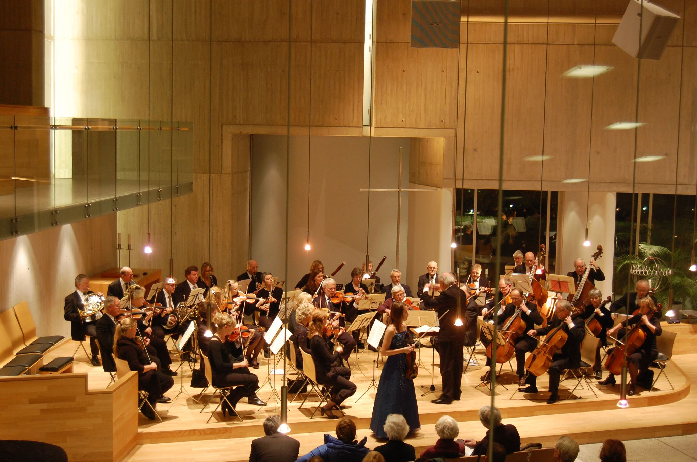
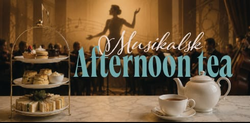

25. oktober
Høstkonsert i Asker kirke
Asker kirke
- Dirigent
- Tanja Karita Ikonen
- Solist
- Ida Kamilla Andersen, fiolin (Barratt-Due)
- Program
- Tsjaikovskij: Symfoni nr. 5
- Bruch: Fiolinkonsert
Årets SiA-prosjekt (Symfoniorkestrene i Akershus).
Stiftet i 1972 · Asker, Norge
Symfonisk musikk og lokale samarbeid siden 1972
Et levende orkesterfellesskap for unge og voksne musikere i Asker.





Siste konsert
Østenstad kirke · 7. juni 2026
Program
Solister fra Asker kulturskole møtte symfonisk repertoar i en sommerkveld bygget for nærhet, presisjon og energi.
Med støtte fra Asker kommune, NASOL og Sparebankstiftelsen DNB.
Om oss
Asker symfoniorkester samler rundt 35 musikere i alderen 17–84 år til ambisiøse prosjekter og konserter i lokalmiljøet.
Vi ønsker å være en inkluderende møteplass for musikalsk utvikling, samspill og mestring på tvers av generasjoner.
Repertoaret spenner fra klassiske hovedverk til nyere musikk, ofte i samarbeid med unge solister, kor og profesjonelle dirigenter.
Kommende konserter
25. oktober
Asker kirke
Årets SiA-prosjekt (Symfoniorkestrene i Akershus).

21. november
Venskaben
Inviter familie og venner til en unik Afternoon Tea-opplevelse i Asker. Vi lover hyggelige overraskelser!
29. november · 6. desember
Østenstad kirke · Dynamitten, Sætre
Billetter legges ut nærmere konsertdatoene.
Bli med
Vil du spille symfonisk musikk i et aktivt orkester?
Vi øver tirsdager på Borgen ungdomsskole kl. 19.00–21.45.
Ta kontakt for en uforpliktende prat om ledige plasser og nivå.
Siste konsert
Fire øyeblikk fra Østenstad kirke med Peer Gynt, unge solister og Asker symfoniorkester.
 YouTube · Knut Helgesen
YouTube · Knut Helgesen
Høydepunkt 1
Sommerkonsert i Østenstad kirke 7. juni 2026. Dirigent: Carl Nilsen.
 YouTube · Knut Helgesen
YouTube · Knut Helgesen
Høydepunkt 2
Peer Gynt Suite nr. 2 fra sommerkonserten i Østenstad kirke. Dirigent: Carl Nilsen.
 YouTube · Knut Helgesen
YouTube · Knut Helgesen
Høydepunkt 3
Kjell Marcussen: Pavane for bratsj og orkester. Solist: Aurora Sommerfeldt Floden. Dirigent: Carl Nilsen.
 YouTube · Knut Helgesen
YouTube · Knut Helgesen
Høydepunkt 4
Gabriel Pierné: Canzonetta. Solist: Anja Møgedal Skjellestad. Dirigent: Carl Nilsen.
Galleri
Salongorkester
Asker symfoniorkester har også et eget salongorkester med musikk inspirert av norske kafeer, restauranter og teatersalonger fra slutten av 1800-tallet og fremover.
Repertoaret beveger seg mellom wienerklassisk taffelmusikk, norske perler og kjente klassiske stykker i et lettere, elegant format.
Salongorkesteret passer godt til mindre arrangementer der musikken skal skape nærhet, atmosfære og historisk klang.
Historie
Orkesteret ble stiftet i 1972 og har siden vært en viktig del av musikklivet i Asker.
Gjennom årene har vi fremført alt fra uroppførelser til sentrale symfoniske verk, med særlig vekt på den klassiske og romantiske tradisjonen.
Samarbeid med solister, kor, kulturskolen og andre aktører i regionen har gjort orkesteret til en bred musikalsk møteplass.
Arne Hagen var orkesterets faste dirigent i nesten 30 år. Bildet viser den første konserten i 1973 på Tveter gård.
Kontakt
Har du spørsmål om konserter, samarbeid eller medlemskap? Ta gjerne kontakt med styret.
Leder: Ingrid Dahl
Kasserer: Marianne Brænden
Styremedlem: Sigurd Solbu
Styremedlem: Christina Øglænd Sveen
Styremedlem: Richard Blichfeldt
E-post: leder@asym.no